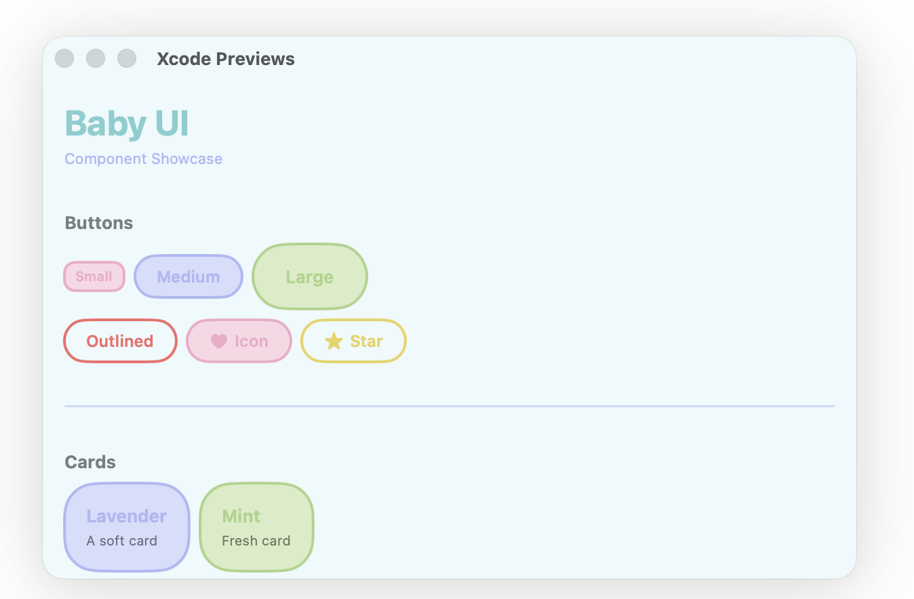
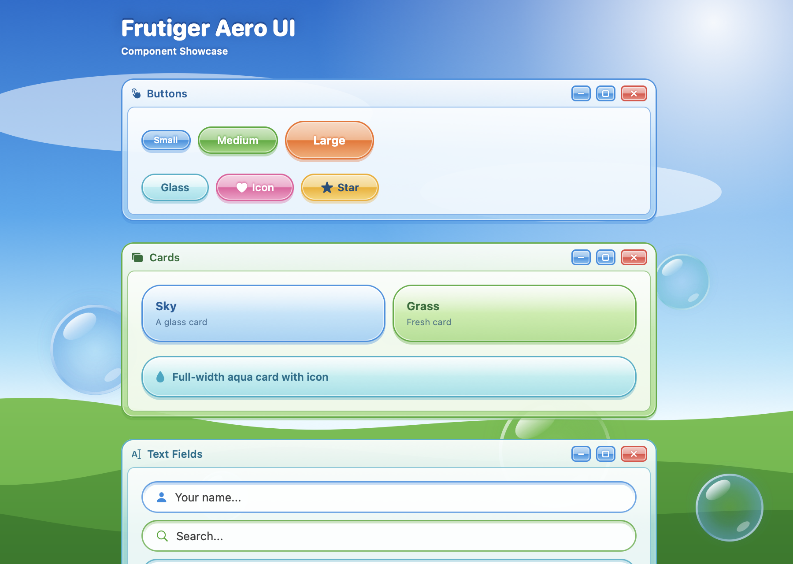

manabu
Projeto autoral · SwiftUI
Manabu
— Aprenda Japonês
Um app de estudo de japonês pensado para transformar pequenos momentos em uma prática consistente. Tudo fica no dispositivo: simples, privado e sem distrações.
Desenvolvedor iOS · Belo Horizonte, Brasil
Sou Wilton, engenheiro de software apaixonado por experiências nativas, interfaces cuidadosas e ferramentas que tornam o dia a dia um pouco melhor.
01 / Projetos em destaque
Uma seleção de produtos, experimentos e bibliotecas open source.
Projeto autoral · SwiftUI
Um app de estudo de japonês pensado para transformar pequenos momentos em uma prática consistente. Tudo fica no dispositivo: simples, privado e sem distrações.
02 / Mais projetos

PREVIEW DO PROJETOBiblioteca · SwiftUI
Componentes de interface para criar experiências iOS expressivas e consistentes.
Explorar repositório ↗
PREVIEW DO PROJETOBiblioteca · UI
Uma coleção de componentes inspirada pelo otimismo digital e pela estética Frutiger Aero.
Explorar repositório ↗Aplicativo · macOS
Um leitor de arquivos Markdown direto ao ponto, para deixar o conteúdo em primeiro plano.
03 / Sobre mim
Minha jornada passa por produtos mobile, sistemas corporativos e muitas horas entendendo como software pode ser mais claro, útil e agradável. Hoje, foco em desenvolvimento para plataformas Apple — da arquitetura ao último detalhe da interface.
04 / Transparência
Meus aplicativos são projetados para respeitar você. Quando não preciso de um dado, não peço. Quando o dado pode permanecer no aparelho, ele permanece.
Manabu estará disponível para download em breve.
SimpleMD estará disponível para download em breve.